Year 1: Fleet Overhaul of 21 Hobby Milling Machines
Teardown, custom spacer/shaft machining, Tormach CNC tooling, and full electrical/DRO integration for a 21-machine student shop fleet.
- Organization
- Dos Pueblos Engineering Academy
- Team
- 5 (Interns & Faculty Mentors)
- My Role
- Machinist & Technical Contributor
- Fleet Scope
- 21 Milling Machines
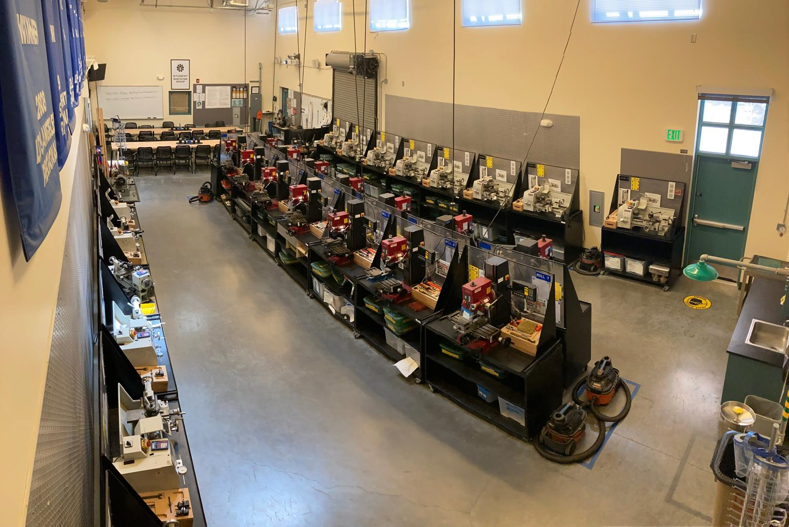
Baseline vs. Rebuilt Configuration
Rather than putting stock replacement mills straight onto the floor after retiring the old fleet, our five-person team stripped and upgraded all 21 units for student safety, repeatability, and DRO precision.

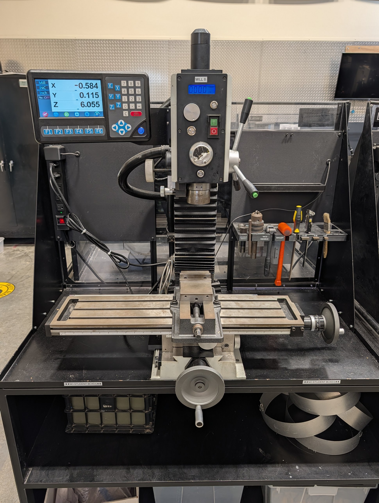
Teardown & System Architecture
Disassembling a baseline mill and tracing its schematic end to end defined our upgrade scope: removing legacy work lights and step-down transformers while mapping mounting locations for linear DRO scales and limit switches.
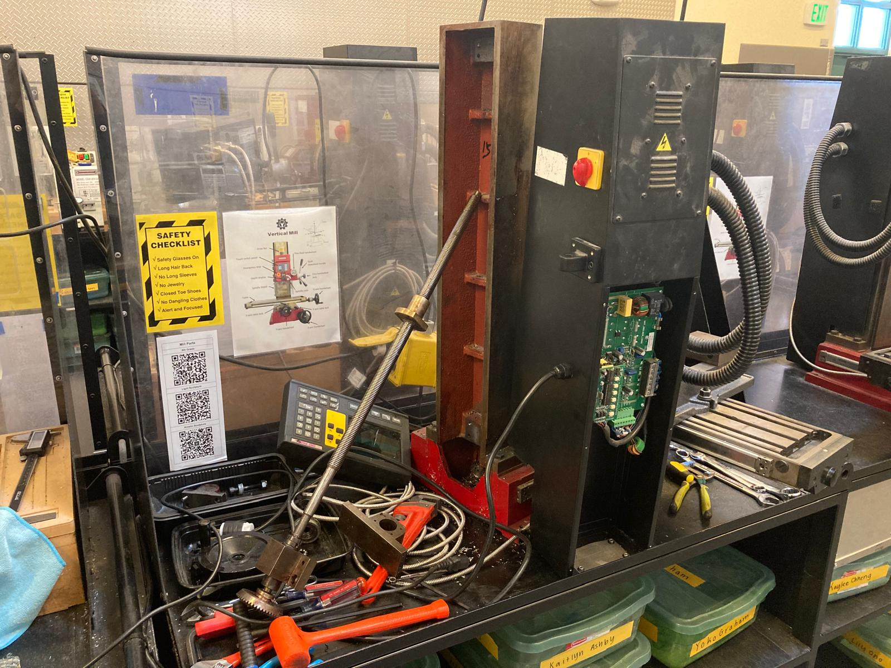
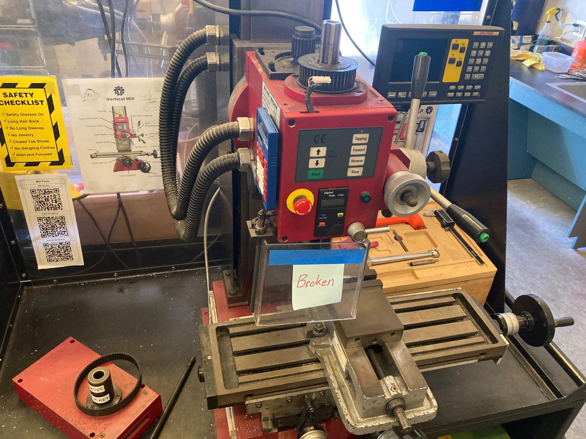
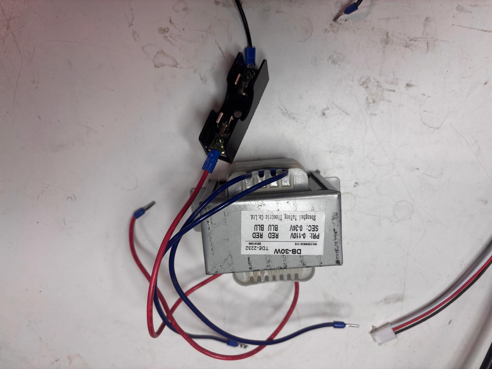
Batch Precision Machining & Individual Fitment
Because cast tolerances varied across frames, all 42 aluminum mounting spacers were measured and faced to fit their specific machine rather than cut to a single nominal dimension. I also turned oversized steel motor shafts down in controlled passes on the Hardinge lathe to protect bearing fits and machined batch brackets on the manual mills.

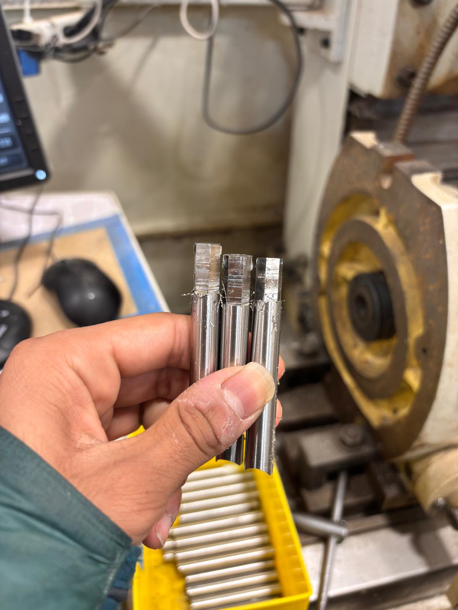


Tormach CNC Operations
Transitioning onto the Tormach CNC mill, I learned workholding offsets, tool-length probing, and CAM toolpaths—producing a batch of custom safety chuck keys for the rebuilt machines.
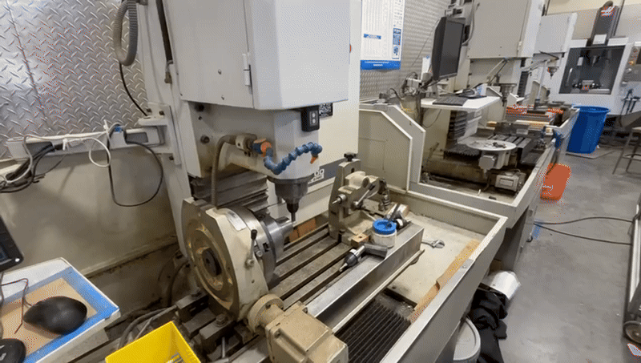

Cart Preparation & Mechanical Assembly Line
Preparing 21 steel rolling carts required drilling ~75 aligned mounting holes per frame—an early indexing slip stretched a 3.5-week estimate to nearly five weeks and underscored the value of jig verification on multi-unit runs. Dedicated assembly stations streamlined DRO scale, bracket, and chuck-key plate installation.

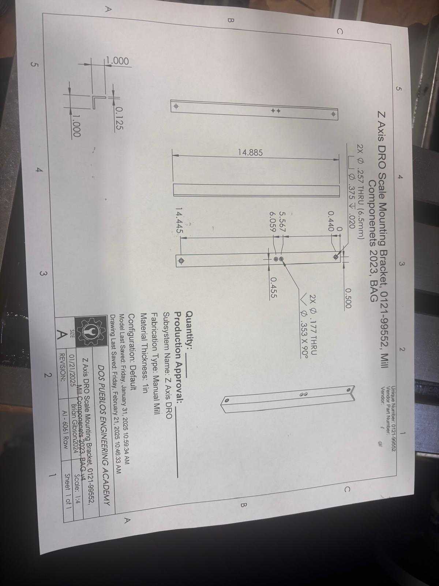
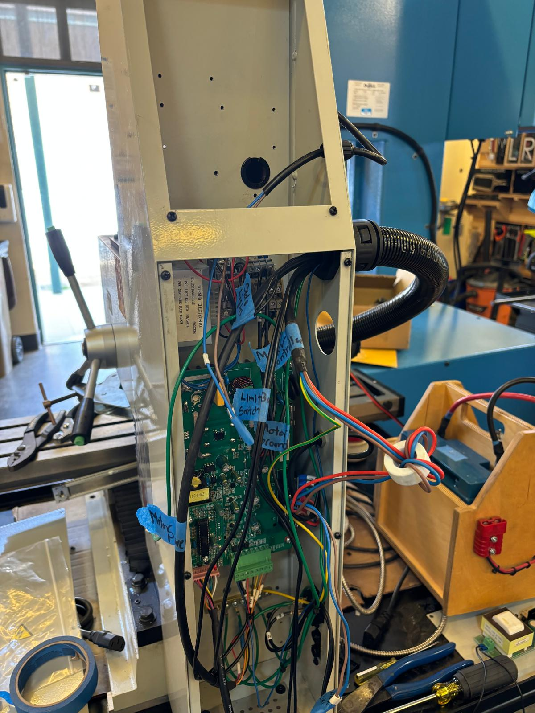

Electrical Integration & Alignment
I routed labeled motor and limit-switch harnesses through the control cabinets and shimmed motor mounts with thin shim stock so shaft collars ran concentric within tight runout tolerances.

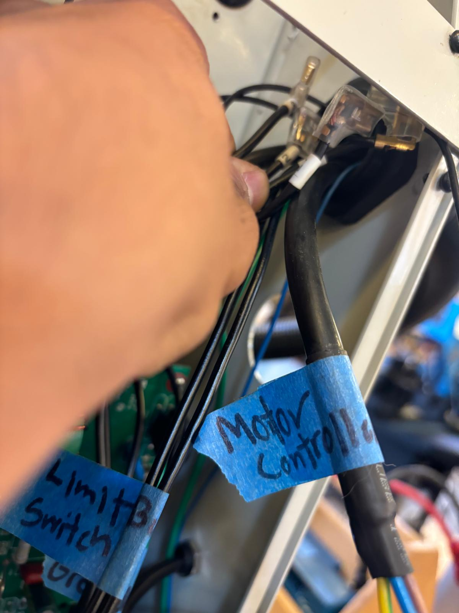

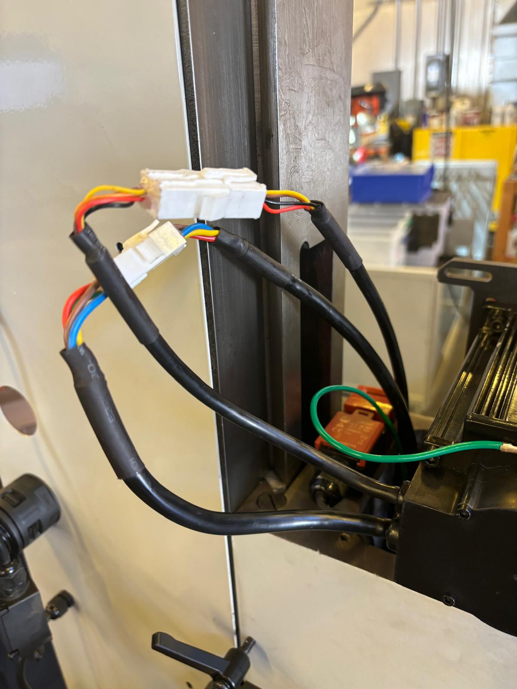
- SolidWorks & Prints
- Hardinge Lathe
- Manual Vertical Mill
- Tormach CNC
- DRO & Harness Integration
- Batch Assembly Workflow
Shop Fabrication & Wiring Archive


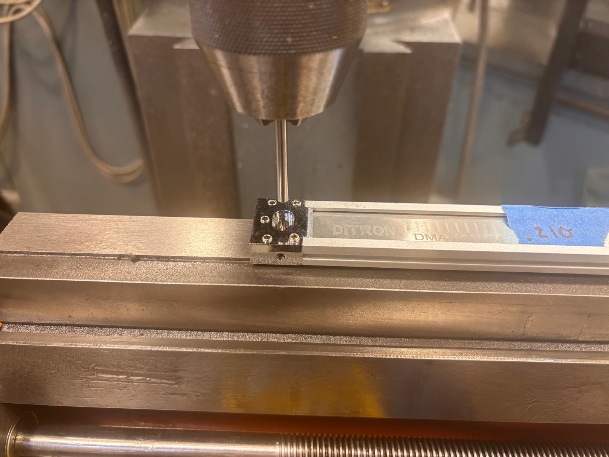


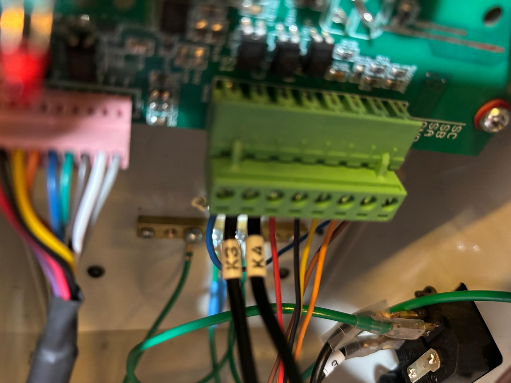